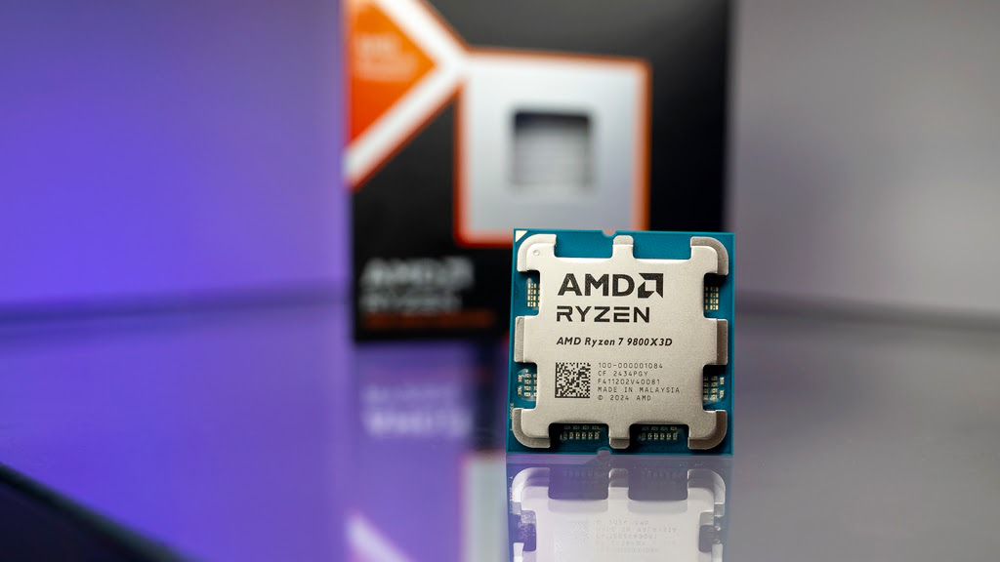
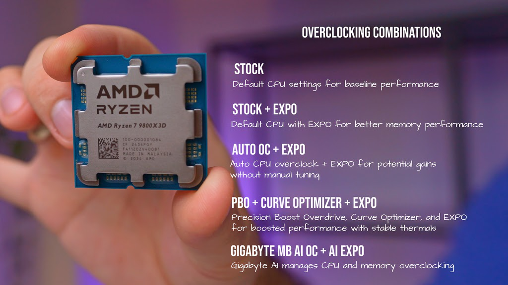

BEST Overclocking Options For AMD Ryzen 7 9800X 3D
Affiliate disclosure: as an Amazon Associate, we may earn commissions from qualifying purchases from Amazon at no extra cost to you.
The AMD Ryzen 7 9800X3D has landed, combining fresh upgrades with the tried-and-true power of previous models. AMD’s enhanced 3D V-Cache technology takes gaming and productivity to the next level, unlocking greater performance where it counts. While it sticks to the proven 8-core, 16-thread setup, the 9800X3D doesn’t just rest on its legacy; it now brings overclocking support, giving enthusiasts even more control to push the limits.
One of the biggest changes with the 9800X3D is the introduction of AMD's 2nd Generation 3D V-Cache technology. This iteration features improved thermal resistance by positioning the cache below the core complex, which helps sustain higher clock speeds. Compared to its predecessor, the 7800X3D, the new 9800X3D has a 500 MHz faster base clock and a 200 MHz faster boost clock. For gamers and productivity enthusiasts alike, these improvements translate to a noticeable bump in single-threaded and multi-threaded workloads.
Another significant update is full overclocking support. For the first time, AMD's 3D V-Cache processors support direct overclocking, allowing users to tweak clock speeds and voltages like other Ryzen 9000 series processors. Combined with new motherboards that support EXPO memory speeds and USB4, this feature gives enthusiasts even more flexibility to fine-tune their systems.
{kind=link}
{kind=link}
{kind=link}
{kind=link}
{kind=link}
{kind=link}
{kind=link}
The fundamentals haven't changed much. AMD is still committed to the AM5 platform and DDR5 memory, which makes the 9800X3D an easy upgrade if you're already on the latest AMD ecosystem.
Now, let’s talk about our testing. In this video, we specifically focused on overclocking and tested the new chip in five different combinations:
- Stock: Running the CPU at its default settings to establish a baseline for performance.
- Stock + EXPO: Adding the EXPO memory profile for improved memory performance without adjusting CPU settings.
- Auto OC + EXPO: Enabling automatic overclocking along with the EXPO profile to see what kind of performance gains are possible without manual tweaking.
- PBO + Curve Optimizer + EXPO: Using Precision Boost Overdrive combined with the Curve Optimizer and EXPO to push the CPU while maintaining stability and thermals.
- Gigabyte Motherboard AI OC + AI EXPO: Letting the Gigabyte motherboard handle the overclocking through its AI overclocking feature, paired with AI EXPO for memory optimization. This has some caveats that I will cover a bit later on.

For testing we are using the 9800X 3D chip on the X870e Gigabyte Aorus Master motherboard with Gskill Trident Z DDR5 memory which is clocked at 6000 M/T. For GPU we used RTX 4080 Super from Zotac and for cooling we threw on be quiet! Dark Rock Elite tower.
Let’s start with consistent burn in test - Prime95. Here the stock settings are at the lowest most of the test as compared to any of the overclocked settings. The AUTO OC on the other hand is on the higher side, peaking at 95 degrees. You will also see that the Gigabyte Auto Motherboard OC is kind off all over the place. First is starts same as others, then goes very high and then drops significantly. We are talking almost 20 degrees delta between this and AUTO OC result.
When we delve deeper into power consumption, it shows the stock and normal overclocks staying pretty close together with stock being lowest in the stack and others pretty much the same at the top. The AI OC on the other hand is all over the place and ends up much lower again.
The story gets interesting when we examine the frequency graph. Here, most setups stay closely aligned, with the AI OC configuration showing slight fluctuations, although it’s within a 150 MHz range. This partially accounts for the lower temperatures and reduced power consumption, but it doesn’t tell the whole story.
It becomes really apparent when we look at the benchmarking results. Here we start with VRAY which is using all core workload. The best performing set-up is our custom OC which includes PBO as well as Curve Optimiser, while the worst by huge 34% margin is the AI OC set-up.
Next up we have Cinebench R23 and results are almost the same: the PBO + Curve leads, while motherboard OC is at the bottom. Do note that the difference between the top 4 is just a few percentage points.
Moving on to 7-Zip, we see some interesting results in the single-threaded compression and decompression tests. While PBO + Curve Optimizer topped the chart with a compression score of just over 13,000 and decompression score of around 11,700, the Stock configuration ends up at the bottom. The Gigabyte Motherboard OC showed a slight improvement over stock, with a compression score of 12 482 and a decompression score of 11 336, but still lagging behind the more optimized setups.
In the multicore scores, we have about the same as other tests – the heavily optimised PBO + Curve leads while other OC modes like AUTO OC is slightly behind. The motherboard OC is again at the bottom. But there is a very good reason for this.
{kind=link}
{kind=link}
{kind=link}
{kind=link}
{kind=link}
{kind=link}
{kind=link}
{kind=link}
While it may look like I am trying to bring Gigabyte down, that is actually not the case. What we’re seeing here is actually expected behaviour. Gigabyte’s tool, known as X3D Turbo Mode, is designed to boost gaming performance by disabling some cores. Similar tools will be available from other brands, possibly with different names. When enabled, the tool even warns you to use it only for gaming and turn it off for other tasks, though this might not be immediately clear to everyone. I know I’ve been there myself; tweaking BIOS settings, enabling anything that sounds impressive, only to wonder why my PC isn’t behaving properly.
That’s why it’s essential to understand what these features actually do and whether they’re worth enabling.
{kind=link}
{kind=link}
{kind=link}
Let’s jump into few game benchmarks and see which OC setting we should use here. Starting with Shadow of The Tomb Raider. In this gaming scenario, PBO + Curve Optimizer was clearly the best performer, delivering the highest frame rates in both average and 1 percentile, but not by a massive margin. The Gigabyte Motherboard OC + AI Expo OC, while not the worst, didn’t provide the competitive edge over the other set-ups. This is in part because Shadow of The Tomb Raider game engine tends to favour multi-core CPUs and removing available cores actually might hurt performance.
Next game is Horizon Zero Dawn. In this gaming benchmark, Gigabyte Motherboard OC took the top spot, indicating that for Horizon Zero Dawn, the optimizations made by the AI OC to prioritize higher clock speeds on fewer active cores paid off well. PBO + Curve Optimizer also performed very well, but it couldn't quite match in this specific case. Here it clearly highlights that different games can benefit from different overclocking approaches.
{kind=link}
{kind=link}
{kind=link}
And that brings us nicely to our conclusion: overall, the AMD Ryzen 7 9800X3D proves to be a strong performer for both gaming and productivity. Throughout our tests, PBO + Curve Optimizer + EXPO consistently delivered the best results for productivity workloads and multi-core benchmarks. This configuration offers a balanced and optimized approach that squeezes every bit of performance out of the CPU while maintaining stability, and I expect with some tweaking, you can get even more out of it.
For gaming, the results were more nuanced. The Gigabyte Motherboard OC + AI Expo OC configuration showed that in specific titles like Horizon Zero Dawn, prioritizing fewer active cores with higher clock speeds can be an effective strategy for boosting average FPS. However, in more multi-thread-optimized games like Shadow of the Tomb Raider, the PBO + Curve Optimizer setup is still doing better. Also the added complexity of turning features on and off will likely result in more frustrating experience than a happy one, so for most people I would recommend going the PBO + Curve optimiser route and for a few select people that only do gaming in titles where it works – the Motherboard X3D Turbo is there for you.
What do you guys think? What kind of setup would you prioritize - balanced performance or higher FPS for gaming? Let us know in the comments below.